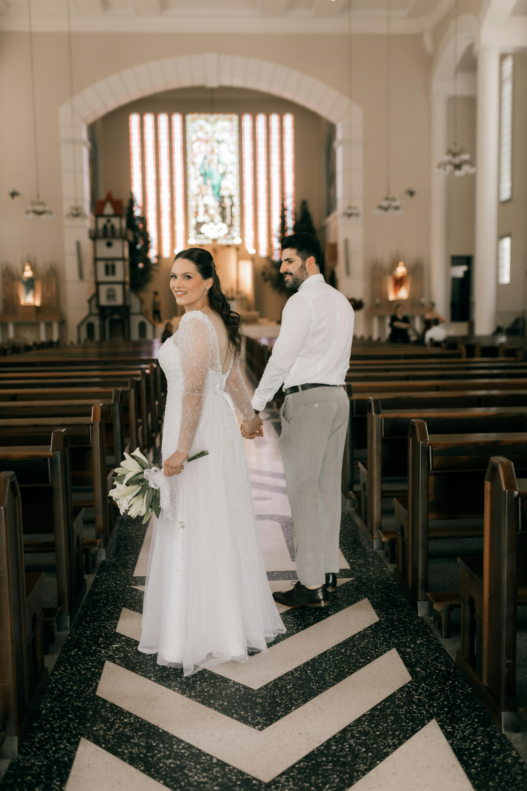

Wedding & Engagement Photography
Proposals
Engagements
Ceremonies

Celebrate your story
Our wedding and engagement sessions are designed to capture emotion, connection, and the quiet details that make your story unforgettable.
From intimate proposals to full wedding celebrations, we blend candid storytelling with elegant portraits so every image feels timeless and personal.
We guide each moment with care while leaving space for the genuine laughter, tears, and in-between memories that matter most.
Book now


FAQ
What couples usually ask.
Yes. The coverage balances guided portraits with unobtrusive documentary moments so the gallery feels complete.
Absolutely. We help plan around ceremony timing, portraits, and light so the day stays smooth.
Yes. Smaller celebrations are approached with the same care, direction, and storytelling attention as full-day weddings.